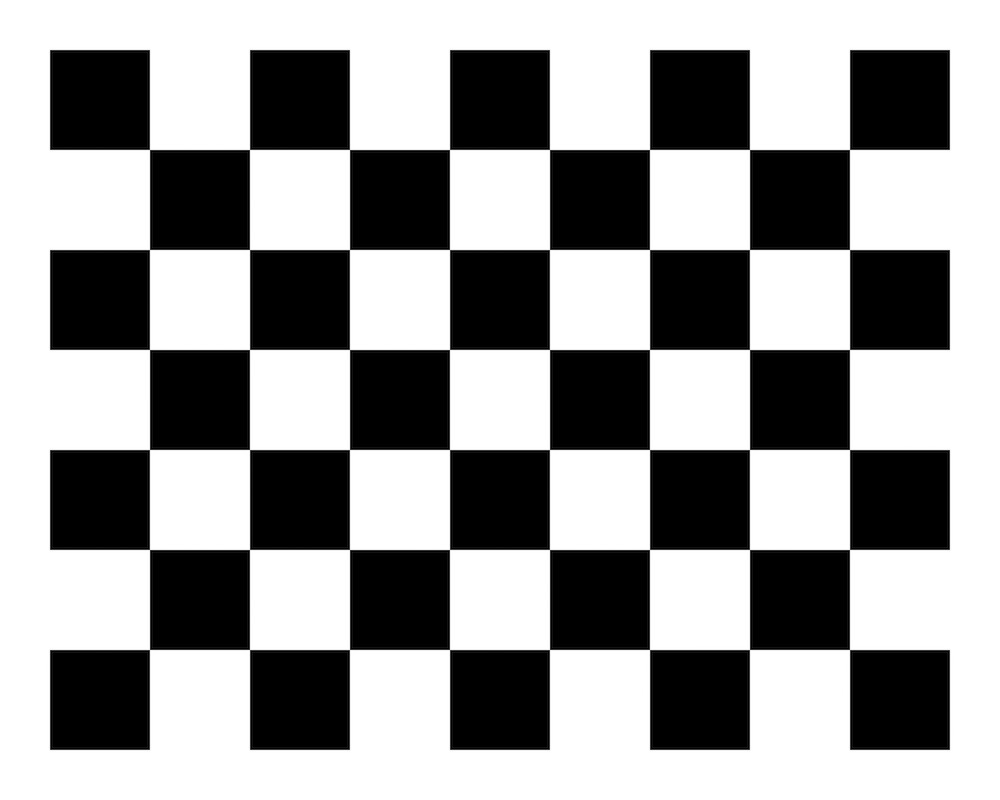
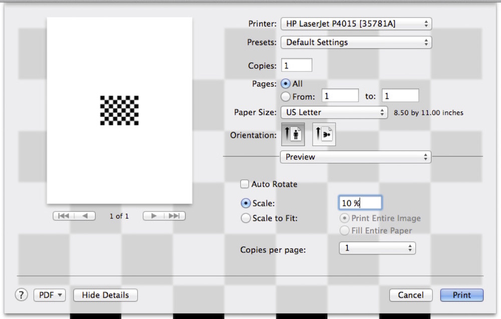
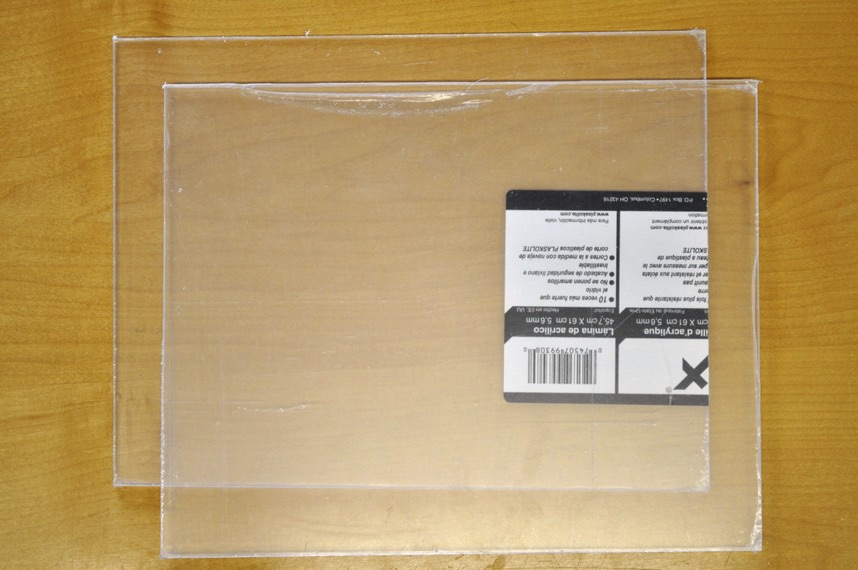
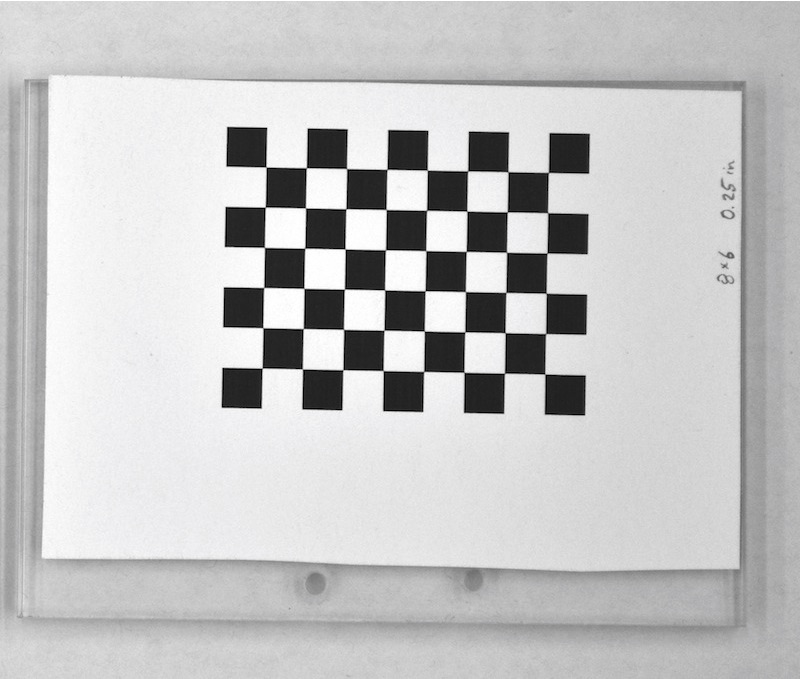

3.2 Creating a checkerboard
Materials needed for this section:
- Cardstock paper
- A flat, hard surface of the same dimensions as the desired checkerboard
- Glue or tape with which to attach paper to surface
This section will show you how to create your own checkerboard using the StereoMorph function drawCheckerboard().
1. Be sure that you've installed the StereoMorph package and load the StereoMorph library into the current R session.
# Load the StereoMorph library library(StereoMorph)
2. Then call drawCheckerboard() with the following parameters: nx (number of internal corners horizontally), ny (number of internal corners vertically), square.size (size of the squares in the image in pixels), filename (where the image will be saved, including the filename).
# Create checkerboard drawCheckerboard(nx=8, ny=6, square.size=180, filename='Checkerboard 8x6 (180px).JPG')
This will create a checkerboard with 8 internal corners along one dimension, 6 internal corners along the other dimension and squares that are 180 pixels along each side. Note that throughout this tutorial "square size" refers to the length along any one side of the square (not, for instance, a diagonal distance or area). Also, note that the number of internal corners are not the number of squares but the number of intersections of black squares. We care about the number of internal corners, rather than the number squares, because it's actually the internal corners that will be detected.
Also, note that the checkerboard has a different number of internal corners along each dimension. This is essential to ensure that the corners are returned in the same order when the checkerboard is photographed in different orientations.
3. You can now print the checkerboard. I've been able to achieve great calibrations with inexpensive, desktop printers so any decent printer should do. Even when attaching the paper to a hard surface it's best to use a thicker paper such as cardstock. Once taped or glued to a hard surface, cardstock is less likely to get bubbles from moisture over time. In the printer prompt, print the checkerboard at 10% scaling.
4. Attach the checkerboard to a flat, hard surface using glue or tape. This way, the checkerboard can be more easily positioned at different angles without bending. If you don't require exceptionally high accuracy, a flat piece of wood or cardboard should be sufficient. If you want an exceptionally flat surface, I recommend plexiglass (at least 0.22 inches thick).
The checkerboard doesn't have to be aligned with the edge of the flat surface. For high-accuracy applications be sure to push out any bubbles between the paper and the surface. I use a spray adhesive to apply the checkerboard to be sure that it lays flat across the entire surface.
